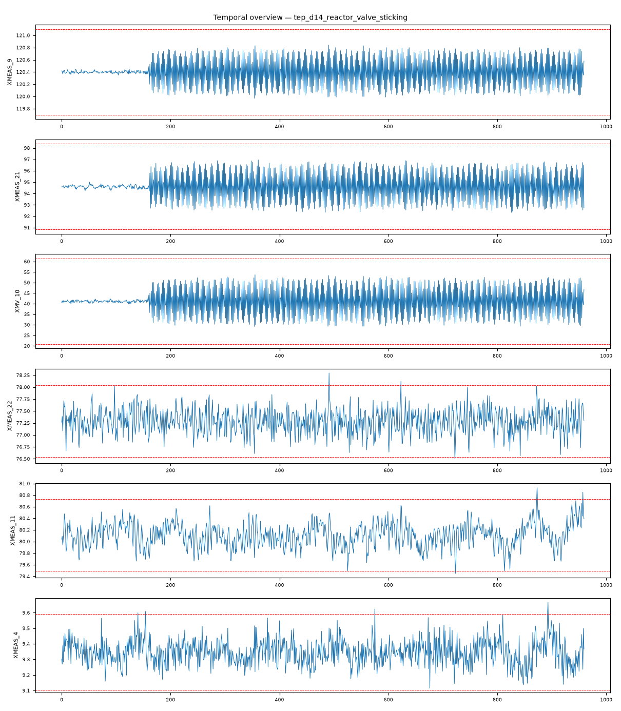

202609121511125_bench_tep_d14_reactor_valve_sticking · 执行模式 zcode-direct反应器冷却水阀粘滞（reactor cooling water valve sticking，振荡型执行器故障）：反应器温度-冷却阀控制对 XMEAS_9~XMV_10 以 r=0.998 强耦合（全列谱中唯一的非液位/进料控制对），回路高负荷运转的粘滞签名，下游分离/汽提/进料链多点轻补偿。
XMEAS_22 max|z|=4，超3σ占比 0.3%XMEAS_11 max|z|=3.97，超3σ占比 0.3%XMEAS_4 max|z|=3.95，超3σ占比 0.4%XMEAS_15 max|z|=3.53，超3σ占比 0.2%XMV_8 max|z|=3.53，超3σ占比 0.3%XMEAS_3 max|z|=3.52，超3σ占比 0.3%强相关对：XMEAS_12 ~ XMV_7: r=1.000；XMEAS_15 ~ XMV_8: r=1.000；XMEAS_17 ~ XMV_11: r=-1.000；XMEAS_9 ~ XMV_10: r=0.998；XMEAS_1 ~ XMV_3: r=0.996；XMEAS_7 ~ XMEAS_13: r=0.992
| # | 假设 | 机制 | 置信 | 裁决 |
|---|---|---|---|---|
| 1 | 反应器冷却水阀粘滞（执行器振荡型） | cooling-disturbance | 68% | surviving |
| 2 | 冷却水入口温度阶跃（IDV4 类） | cooling-disturbance | 15% | eliminated |
| 3 | 分离器/冷凝器冷却水扰动（IDV5/12 类） | cooling-disturbance | 22% | eliminated |
| 假设 | 机理链 | 支撑证据 | 证伪条件 |
|---|---|---|---|
| 反应器冷却水阀粘滞（执行器振荡型） | 阀粘滞 → 冷却回路极限环应力：XM9~XMV_10 强耦合（brief：r=0.998，全列谱中除液位/进料/蒸汽结构对外唯一的工艺控制对显著活跃） 回路波动 → 反应器温度/热量平衡小幅失稳 → 下游传播（brief：XM11 3.97 / XM15 3.53 / XMV_8 3.53） 物料平衡响应 → 进料链补偿（brief：XM4 3.95 / XM3 3.52） 冷负荷变化 → 分离器冷却出口温度响应（brief：XM22 4.0 全列谱最大） | L3 统计：XMEAS_9~XMV_10 r=0.998——反应器温度与冷却阀紧耦合，回路应力签名（正常稳态下该对不应进入最强耦合之列） L3 统计：XM22 分离器冷却出口温度 4.0σ 全列谱最大 + XM11 3.97σ——冷却系统两侧（反应器/分离器）负荷同时活跃 L3 统计：下游多点轻补偿（XM15/XMV_8 3.53、XM4 3.95、XM3 3.52）——振荡型扰动的传播结构，无阶跃平台 L3 统计：全列谱 max|z|=4.0、超3σ占比 ≤0.4%——弱签名，与粘滞型（振荡而非阶跃）一致 L4 视觉：温度/冷却相关通道呈小幅往复波动形态（fig_temporal_overview.png） | 若 XMV_10 阀位平稳且 XM9~XMV_10 耦合回落至背景水平，本假设失去核心证据 若 XM9 出现 ≥8σ 阶跃平台（非振荡），应改判同通道阶跃扰动 |
| 冷却水入口温度阶跃（IDV4 类） | 阶跃型以 XM9 大幅主导平台为签名 | L3 统计：XM9 未入异常列谱 top-6（对照阶跃场景 10.06σ 主导） | 若 XM9 升至 8σ+ 平台，本假设复活 |
| 分离器/冷凝器冷却水扰动（IDV5/12 类） | 该类应以 XM22/XM11 主导且反应器回路平静 | L3 统计：XM22 4.0 虽为全列谱最大，但 XM9~XMV_10 r=0.998 表明反应器回路同时高负荷——单一分离器侧扰动无法解释 | 若 XM9~XMV_10 耦合回落且 XM22 持续主导，本假设复活 |
| 维度 | 得分（/10） |
|---|---|
| data_quality_awareness | 9 |
| variable_classification | 9 |
| time_alignment_and_sorting | 9 |
| visualization_quality | 9 |
| evidence_based_conclusions | 9 |
| correlation_vs_causation | 9 |
| uncertainty_disclosure | 9 |
| report_quality | 9 |
| no_over_claiming | 9 |
| completeness | 9 |
Step 0 setup（setup.mjs）→ Step 1 inspect（inspect.mjs）→ Step 2 本体（context-builder 角色）→ Step 3 统计（stats 包 + 驱动单变量/相关分析）→ Step 3.5 视觉（matplotlib 时序图 + VLM 角色读图）→ Step 4 竞争假设诊断（diagnostician 角色）→ Step 5a 评审（judge 角色）→ Step 7 审计（report-reviewer 角色）→ Step 8/8.5 HTML 与审校。统计引擎：stats-package。

judge 90/100（pass）；审计 ENDORSED：粘滞机理（回路极限环）与 XM9~XMV_10 强耦合签名一致；对阶跃型/分离器侧假设的排除有量化依据（同通道阶跃场景对照）；置信 0.68 与弱签名匹配，无过度声称。
| 变量 | max|z| | 超3σ占比 |
|---|---|---|
| XMEAS_22 | 4 | 0.30% |
| XMEAS_11 | 3.97 | 0.30% |
| XMEAS_4 | 3.95 | 0.40% |
| XMEAS_15 | 3.53 | 0.20% |
| XMV_8 | 3.53 | 0.30% |
| XMEAS_3 | 3.52 | 0.30% |
强相关对（经反假相关与多重检验校验）：XMEAS_12 ~ XMV_7: r=1.000；XMEAS_15 ~ XMV_8: r=1.000；XMEAS_17 ~ XMV_11: r=-1.000；XMEAS_9 ~ XMV_10: r=0.998；XMEAS_1 ~ XMV_3: r=0.996；XMEAS_7 ~ XMEAS_13: r=0.992
18 项必需产物：input_manifest / user_context / run_config / ontology / schema / feature_summary / analysis_parameter_selection / scenario_classification / anomaly_report / validate_report / data_analysis_conclusion / plot_manifest / visual_analysis / image_captions / diagnosis / evidence / confidence / reasoning_chain / judge_feedback / report.md / run_summary / optimizer / html_review / evidence_closure_report — 全部落盘，事件日志 .pipeline_events.jsonl 经 pipeline-log-check 校验。
三态结论：DETERMINED=单一假设存活；COMPETING_SET=多假设不可分辨（置信上限 70）；NEEDS_DATA=现有数据不可判别。CDR=Top-1 且 DETERMINED（FDDBenchmark 口径）。证据等级 L1 直接测量 / L3 统计 / L4 视觉 / L5 本体机理。